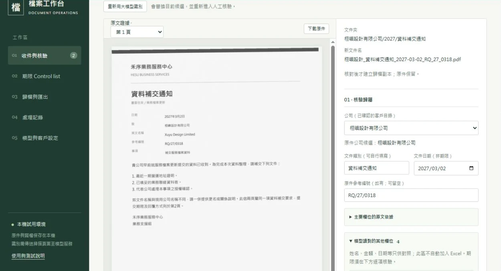
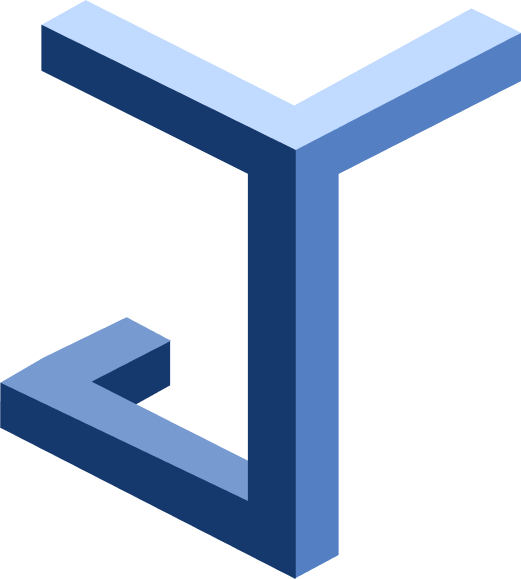

01AI 业务流程
资料进来，事情办完。
扫描件、试卷、咨询线索——这些以前靠人一份份看、一条条记的资料工作，我们做成 AI 先整理、人来核准的系统。原件留底，不确定的交给人。
会计档案工作台 · 题库 AI 录入 · 医疗线索分池
看完整案例 →

佳裕云智关于佳裕云智
佳裕云智（Junemoon）位于深圳前海，服务内地与香港的企业和机构。我们的顾问就是工程师：坐到业务旁边理解问题，自己把系统做出来，上线后继续负责。我们只做增效——帮你做以前做不起的事，而不是用 AI 替换你的团队。
诊断和开发是同一批人，不在交接里丢信息。
瞄准新渠道、新服务和更好的跟进，不以裁员为目标。
每项交付都写明已验证什么、还有什么没验证。
三项能力
01AI 业务流程
扫描件、试卷、咨询线索——这些以前靠人一份份看、一条条记的资料工作，我们做成 AI 先整理、人来核准的系统。原件留底，不确定的交给人。
会计档案工作台 · 题库 AI 录入 · 医疗线索分池
看完整案例 →
02AI 搜索可见度
客户开始先问 DeepSeek、豆包、Kimi 再做决定。我们检测你在各引擎的回答里出不出现、说得对不对，整理纠错内容，再按同一口径复测。
一家专科医院的基线检测（2026-05，匿名）
看完整案例 →2026-05-21 基线检测 · 211 条回答 · 4 个引擎
直接问医院名：品牌、预约、口碑、到院
48 / 48 条回答提到这家医院
按需求提问：症状、费用、方案、术后等
17 / 163 条回答提到这家医院
03接管与陪跑
已有平台没人管，或想加 AI 又怕出事：先做非破坏性评估和盘点，试运维两周，再正式接管。日常运维与新功能开发分两条线走，出了问题有记录、能回退。
教育出版平台 · 运行中
看完整案例 →我们从“哪些事一直应该做，但以前请不起人、算不过账”开始，而不是从“能少用几个人”开始。
我们的思路与方法 →联系
一封邮件、几句话就够：你的业务是什么，那件事卡在哪里。我们会回复是否适合、可以怎样开始。
riversense11@gmail.com+86 187 2153 2448
如果这个页面是别人分享给你的，也可以直接联系分享给你的人。